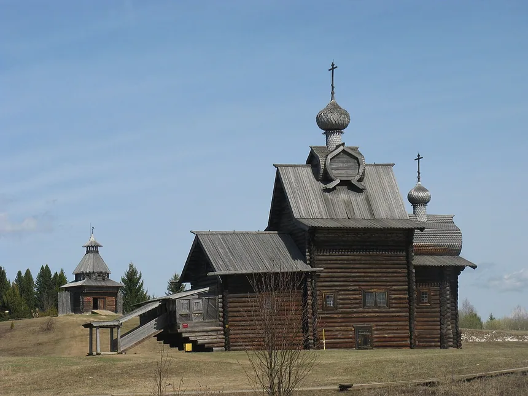
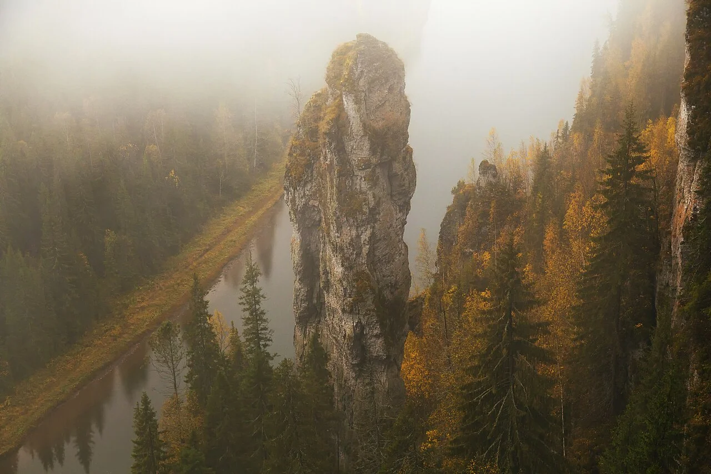
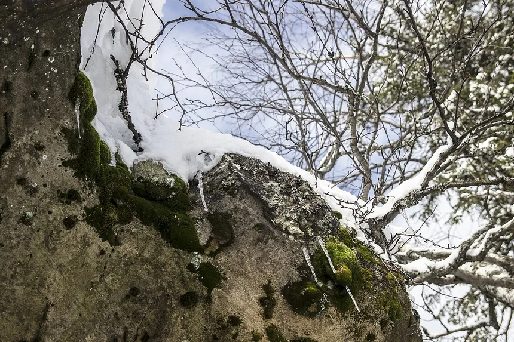
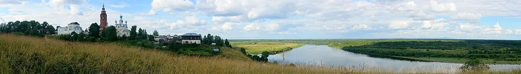
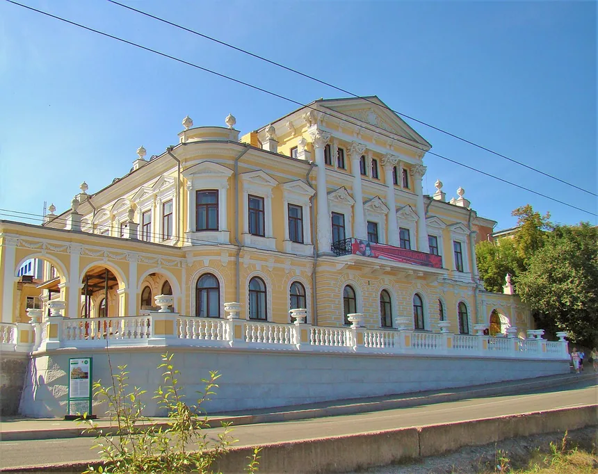

Архитектурный музей «Хохловка»
В музей на берегу Камского водохранилища перевезли деревянные церкви, избы и постройки соляного промысла.
От песчаников Каменного города до старых соляных промыслов. Здесь Кама соединяет уральские ландшафты с историей заводов и купеческих городов.

Пермский край лежит на границе Восточно-Европейской равнины и Уральских гор. Солеварение, металлургия и речная торговля оставили след в облике Соликамска, Усолья и Перми. В северо-западной части края находится Коми-Пермяцкий округ с центром в Кудымкаре.
На Егошихе начал работу медеплавильный завод, вокруг которого выросла Пермь.
Пермь стала центром Пермского наместничества.
Из состава Свердловской области выделена Пермская область.
Жители Пермской области и Коми-Пермяцкого автономного округа поддержали объединение на референдуме.
1 декабря Пермский край образован в результате объединения области и автономного округа.

В музей на берегу Камского водохранилища перевезли деревянные церкви, избы и постройки соляного промысла.

Скальные останцы на хребте Рудянский Спой разделены узкими проходами. Один из самых узнаваемых по форме напоминает черепаху.

Один из старейших городов Прикамья стоит над рекой Колвой. Дореволюционные храмы и купеческие дома сохранились в его историческом центре.

На набережной Камы стоит особняк предпринимателя Николая Мешкова. Теперь в нём работает Пермский краеведческий музей.
На западе края преобладают равнины, а на востоке поднимаются хребты Среднего и Северного Урала. Чусовая и Усьва известны скалами над водой. За охрану горной тайги и истоков северных рек отвечает Вишерский заповедник.
В местной культуре переплетаются русские и коми-пермяцкие традиции. Старинные деревянные постройки рассказывают о жизни деревень и промыслов, а в Перми сохранилась память о Сергее Дягилеве и его семье.
Посикунчики — небольшие жареные пирожки с сочной начинкой. В коми-пермяцкой кухне используют пистики — молодые весенние побеги хвоща.